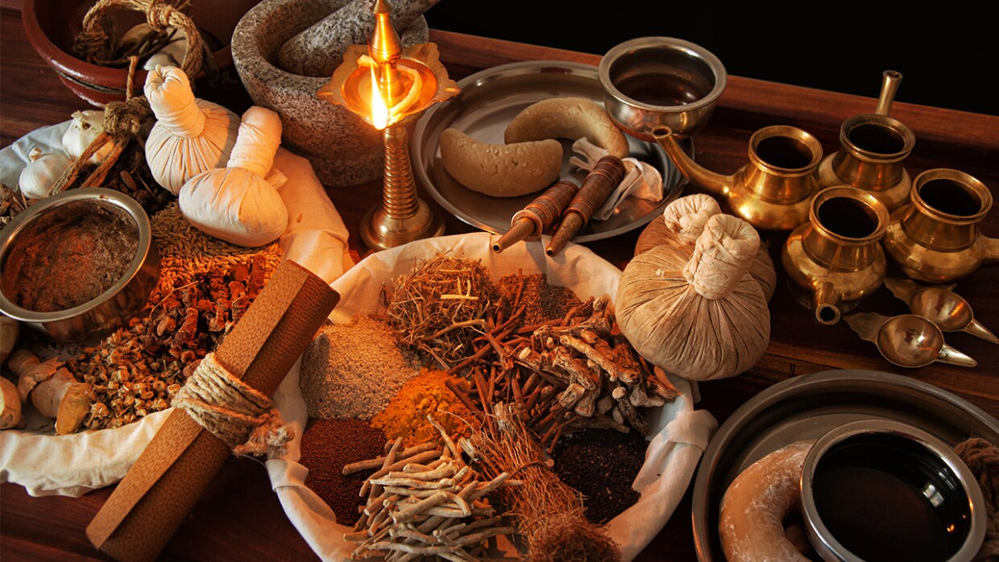

An ancient Indian system of medicine and holistic healing that emphasizes balance between mind, body, and spirit, still guiding wellness worldwide.

Ayurveda, meaning "Science of Life," originated in India over 3,000 years ago. Documented in the Charaka Samhita and Sushruta Samhita, it introduced principles of diet, herbal medicine, detoxification, yoga, and surgery. Its philosophy focuses on balancing the three doshas — Vata, Pitta, and Kapha — for complete well-being.
🎯 Quick Quiz:
Who is regarded as the Father of Surgery in Ayurveda?